1. Which of the following is a correct name for (CH3)2C=CHCOCH3? A) 2-methyl-2-penten-4-one B) 4-methyl-3-penten-2-one C) 1,3-dimethyl-2-pentenal D) isopentenone
2. Which of the following is 3,3-diphenylpropanal? A) C6H5CH2CH(C6H5)CHO B) C6H5CH2CH2COC6H5 C) (C6H5)2CHCH2CHO D) (C6H5)2CHCH2COC6H5
3. Which of the following compounds is not named correctly?
4. Which of the following compounds is not named correctly?
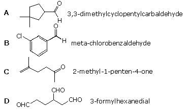
5. Which of the following compounds is not named correctly?
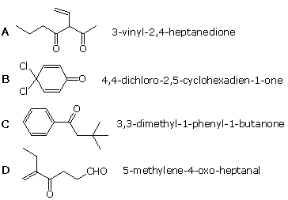
6 Which of the following may be classified as an acetal?
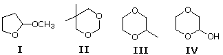
7 Which of the following reactions is a good method for preparing an aldehyde? A) Jones' reagent and a 1º-alcohol B) Jones' reagent and a 2º-alcohol C) PCC and a 1º-alcohol D) H2SO4 a 1º-alcohol and heat
8 Which of the following are enol tautomers of 3-methylcyclohexanone?
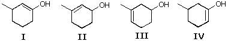
9 Which of the following statements is not generally true? A) C=O is stronger than an equivalent C=C B) C=O has a larger bond dipole than C=C C) aldehydes and ketones have higher boiling points than similarly sized alkenes D) alkenes add nucleophiles more rapidly than aldehydes or ketones of similar structure
10 Which of the following compounds exchanges the largest number of hydrogens for deuterium when treated with KOD in D2O? A) 3-methyl-1,2-cycloheptanedione B) 2-methyl-1,3-cycloheptanedione C) 5-methyl-1,3-cycloheptanedione D) 6-methyl-1,4-cycloheptanedione
11 Four C8H14O ketones are examined by 13Cnmr spectroscopy. One of them has five distinct carbon signals. Which of the following fits this fact? A) 4,4-dimethylcyclohexanone B) 3,3-dimethylcyclohexanone C) 2,2-dimethylcyclohexanone D) 2,2,4,4-tetramethylcyclobutanone
12 Which of the following compounds could not be converted to pentanal in one or two steps? A) 1-pentyne B) trans-5-decene C) 2-pentanone D) 1-pentanol
13 Treatment of cyclohexanone with an excess of H218O produces 18O labeled cyclohexanone. Which of the following is a likely intermediate in this isotope exchange? (the isotope is not named) A) 1-cyclohexen-1-ol B) 1,1-cyclohexanediol C) 2-cyclohexen-1-one D) 1,2-cyclohexanediol
14 Reaction of C6H5CHBr2 with NaOH in aqueous THF is likely to produce which product? A) C6H5CHBrOH B) C6H5CH(OH)2 C) C6H5CHO D) C6H5CO2H
15 Which of the following carbonyl compounds reacts most rapidly with nucleophilic reagents? A) benzaldehyde B) 3,3-dimethylbutanal C) acetophenone D) 2,2-dimethylcyclohexanone
16 Which of the following amines would be best chosen for preparing an enamine derivative from cyclohexanone? A) dimethylamine B) ethylamine C) trimethylamine D) hydroxylamine
17 Which reaction or sequence of reactions would best accomplish the following synthesis?
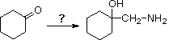
18 Heating cyclopentanone with either: I ethyl amine, or II diethylamine, together with an acid catalyst leads to different results. Which of the following best describes this difference? A) I gives an imine & II fails to react B) I gives an enamine & II fails to react C) I gives an imine & II gives an enamine D) I gives an enamine & II gives an imine
19 Which reaction or sequence of reactions would be best used to convert cyclohexanone to cis-1,2-cyclohexanediol? A) PCC in CH2Cl2 and base B) (i) NaBH4; (ii) H3PO4 & heat; (iii) OsO4 in pyridine C) (i) NaBH4; (ii) H3PO4 & heat; (iii) C6H5CO3H D) (i) NaBH4; (ii) OsO4 in pyridine
20 A C9H10O compound has a strong absorption at 1686 -1cm in the infrared. Which of the following compounds would be expected to display such an absorption band?
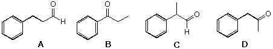
21 A C9H10O compound has a strong absorption at 1730 and two smaller but sharp absorption peaks at 2719 & 2818 -1cm in the infrared. The 1Hnmr has a strong doublet at δ1.0 ppm. Which of the following compounds would be expected to display these features?
22 The Wittig reaction takes place between a carbonyl compound and a phosphorus ylid. Which of the following represents the dipolar contributor to such an ylide?
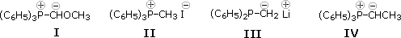
23 Which of the following reaction sequences would be best for converting cyclohexanol to methylenecyclohexane, (CH2)5C=CH2 ? A) (i) H3PO4 & heat; (ii) CH2I2 + Zn(Cu) B) (i) PCC in CH2Cl2; (ii) CH3MgBr; (iii) H3PO4 & heat C) PCC in CH2Cl2; (ii) (C6H5)3P=CH2 D) CH2N2 & heat
24 Which of the following Wittig reagents would be useful for converting R2C=O into R2CHCH=O? A) (C6H5)3P=CH-OCH3 B) (C6H5)3P=CH-CH3 C) (C6H5)3P=Cl2 D) (C6H5)3P=CH-CH=CH2
25 Two equivalents of the Wittig reagent (CH3)2C=CH-CH=P(C6H5)3 were allowed to react with a C4H4O2 compound. The chief product was 2,11-dimethyl-2,4,6,8,10-dodecapentaene, (CH3)2C=CH(CH=CH)3CH=C(CH3)2. What was the C4H4O2 compound used in this reaction? A) 2-butyne-1,4-diol B) 1,2-cyclobutanedione C) 1,3-butadien-2,3-diol D) 2-butenedial
26 Which of the following reactions would not be a useful way of preparing 1-phenyl-2-butanol? A) phenylacetaldehyde + ethylmagnesium bromide B) butanal + phenylmagnesium bromine C) propanal + benzylmagnesium bromine D) 1-phenyl-2-butanone + NaBH4
27 Which of the following reactions would not be a useful way of preparing 2-phenyl-2-butanol? A) 2-butanone + phenylmagnesium bromine B) acetophenone + ethylmagnesium bromide C) cis-2,3-dimethyloxirane + phenylmagnesium bromide D) ethylphenylketone + methylmagnesium iodide
28 In the reaction of (R)-3-phenyl-2-butanone with methylmagnesium iodide, what happens to the configuration of the stereogenic center? A) nothing, it remains unchanged B) inversion takes place C) racemization occurs D) the product is achiral
29 Which of the following reactions would not be useful for converting 4,4-diethylcyclohexanone into 1,1-diethylcyclohexane? A) Wolff-Kishner reduction (N2H4, strong base & heat) B) Clemmensen reduction (Zn/Hg, acid & heat) C) thioacetal reduction (i HSCH2CH2SH & BF3; ii H2 + Raney Ni) D) LiAlH4 in THF & heat
30 Which of the following is a semicarbazone derivative of an aldehyde (RCHO)? A) RCH=N-NHCONH2 B) RCH=N-OH C) RCH=N-NH2 D) RCH=N-C(CH3)3
31 Which of the following isomers is most acidic ? A) 3,4-hexanedione B) 2,5-hexanedione C) 2,4-hexanedione D) hexanedial
32 You have two C6H10O ketones, I and II. Both are optically active, but I is racemized by treatment with base and II is not. Wolff-Kishner reduction of both ketones gives the same achiral hydrocarbon, formula C6H12. What reasonable structures may be assigned to I and II? A) I is 3-methyl-4-penten-2-one; II is 4-methyl-1-penten-3-one B) I is 2-methylcyclopentanone; II is 3-methylcyclopentanone C) I is 3-methylcyclopentanone; II is 2-methylcyclopentanone D) I is 2-ethylcyclobutanone; II is 3-ethylcyclobutanone
33 Jones' reagent oxidizes aldehydes to carboxylic acids but normally does not oxidize ketones. What intermediate species is most likely responsible for the aldehyde oxidation? A) a carbonyl hydrate B) an enol tautomer C) an oxonium conjugate acid of the aldehyde D) an acylium cation
34 The lithium enolate base from cyclohexanone reacts with alkyl halides, often in different ways. As shown here, methyl iodide and tert-butyl bromide react to give different organic products, I and II, together with lithium halides. What are the products from these reactions?
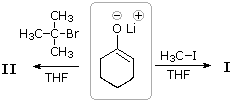
35 A C5H12O compound is optically active, and is oxidized by PCC in CH2Cl2 to an optically active C5H1OO product, which is racemized in acid or base. Which of the following best fits these facts? A) 2-pentanol B) 2-methoxybutane C) 2-methyl-1-butanol D) 3-methyl-1-butanol
36 Which of the following aldehydes, used alone, will undergo an aldol reaction? A) formaldehyde, CH2O B) butanal, CH3(CH2)2CHO C) benzaldehyde, C6H5CHO D) 2-propenal, CH2=CHCHO
37 Which of the following reaction sequences would be best for preparing 2,2-dimethyl-3-hexanone from butanal? A) (i) addition of tert-butylmagnesium bromide in ether; (ii) hydrolysis workup; (iii) PCC in CH2Cl2 B) (i) NaBH4; (ii) PBr3; (iii) Mg in ether; (iv) 2,2-dimethylpropanal, followed by hydrolysis C) (i) Wittig reaction with (C6H5)3P=C(CH3)2; (ii) BH3 in THF; (iii) H2O2 & base; (iv) PCC in CH2Cl2 D) (i) Wittig reaction with (C6H5)3P=CHC(CH3)3; (ii) BH3 in THF; (iii) H2O2 & base; (iv) PCC in CH2Cl2
38 How can 1,1,1,2,2-pentadeutero-3,3-dimethylpentane, C2H5C(CH3)2C2D5, be prepared from 3,3-dimethyl-2-pentanone? A) (i) NaOD in D2O (excess); (ii) LiAlD4 in ether; (iii) D2O workup B) (i) Wolff-Kishner reduction with N2D4 in ROD; (ii) NaOD in D2O (excess) C) (i) Zn & DCl in CH3CO2D; (ii) LiAlD4 in ether; (iii) D2O workup D) (i) NaOD in D2O (excess); (ii) HSCH2CH2SH + BF3; (iii) D2 + Raney Ni catalyst
39 Acetaldehyde reacts with (R)-1,2-propanediol (acid catalyst) to give two isomeric acetals. What is their isomeric relationship? A) they are constitutional isomers B) 2 they are diastereomers C) 3 they are enantiomers D) they are conformers
40 What is the product of the following reaction?
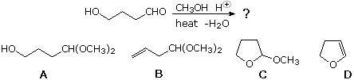
41 What product or products are expected from acid-catalyzed hydrolysis of the following compound?
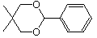
42 Base induced elimination of 3-chlorocyclohexanone I is much faster than elimination of cyclohexyl chloride II. What is the major factor accounting for this difference? A) the halogen in I is less hindered B) the halogen in I is forced to be axial C) elimination of I produces a more stable conjugated double bond D) I rapidly forms an enolate anion, and this immediately eliminates a stable chloride ion
43 Which of the following optically active compounds will be racemized on treatment with warm alcoholic sodium ethoxide?
44 A C5H8 hydrocarbon is reacted with BH3 in THF, followed by oxidation with alkaline hydrogen peroxide. Treatment of the resulting product with PCC in CH2Cl2 produces a chiral ketone, formula C5H8O. What hydrocarbon best fits these facts? A) 1-methylcyclobutene B) methylenecyclobutane C) vinylcyclopropane D) cyclopentene
45 Which of the following compounds would not be a possible product from the mixed aldol reaction of acetaldehyde and butanal? A) 3-hydroxybutanal B) 2-ethyl-3-hydroxybutanal C) 3-ethyl-2-hydroxyhexanal D) 3-hydroxyhexanal
46 A C7H12O2 compound gives a positive Tollens' silver mirror test and a positive iodoform test. Which of the following would satisfy these facts? A) 2-hydroxy-3,3-dimethylcyclopentanone B) 2,5-heptanedione C) 2,2-dimethyl-3-oxopentanal D) 2,2-dimethyl-4-oxopentanal
47 The iodoform test for methyl ketones is not widely used anymore. Which of the following spectroscopic tools is best for providing equivalent information? A) UV-Visible B) 1H nmr C) 13C nmr D) infrared
48 An aldol condensation is used to prepare 1,3-diphenyl-2-propenone, C6H5CH=CHCOC6H5. Which combination of reactants will lead to this product? A) enolate donor=acetaldehyde; carbonyl acceptor=benzaldehyde B) enolate donor=phenylacetaldehyde; carbonyl acceptor=phenylacetaldehyde C) enolate donor=acetophenone; carbonyl acceptor=benzaldehyde D) enolate donor=propiophenone; carbonyl acceptor=benzaldehyde
49 Which of the following compounds would be the major product from aldol condensation of 6-oxoheptanal?
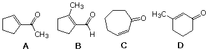
50 Which of the following procedures would not be suitable for preparing 3-methyl-1-phenyl-1-butanone, C6H5COCH2CH(CH3)2? A) (i) C6H5COCH=CHCH3 + (CH3)2CuLi in ether; (ii) H3O+ workup B) (i) benzene + (CH3)2CHCH2COCl & AlCl3 (ii) H3O+ workup C) (i) C6H5MgBr + (CH3)2CHCH2CHO in ether; (ii) H3O+ workup; (iii) PCC in CH2Cl2 D) (i) (CH3)2CHMgBr + C6H5COCH3 in ether; (ii) H3O+ workup; (iii) PCC in CH2Cl2
51 Formulas for four ethyl ethers are drawn below. Two are cleaved by aqueous acid much more easily than the other two. Which ethers are more easily hydrolyzed?
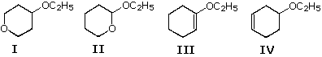
52 The Wieland-Miescher ketone is an important synthetic intermediate. Its formula is shown below. What starting materials would be suitable for preparing this compound by a combination of Michael and aldol reactions?
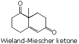
53 2,2-Dimethyl-1,3-propanediol is coveniently prepared by heating 2-methylpropanal with excess formaldehyde and Ca(OH)2. What sequence of reactions takes place in this synthesis? A) dehydrogenation to 2-methyl-2-propenal followed by addition of formaldehyde B) dehydrogenation to dimethylketene followed by addition of formaldehyde C) a crossed aldol reaction followed by a crossed Cannizzaro reaction D) a crossed Cannizzaro reaction followed by a crossed aldol reaction
54 A bis-aldol dimerization of 1-phenyl-1,2-propanedione, C6H5COCOCH3, gives which of the following?
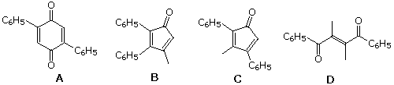
55 What donor and acceptor reactants should be used to prepare the following compound by an aldol reaction?
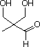
56 What donor and acceptor reactants should be used to prepare the following compound by an aldol condensation (or Claisen-Schmidt reaction)?
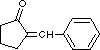
57 The formula of brevicomin, a pheremone of the western pine beetle, is shown below. What open chain ketodiol would close to this bicyclic acetal? (ignore stereoisomer issues)
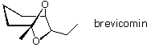
58 The formula of multistriatin, a pheremone of the elm bark beetle, is shown below. What open chain ketodiol would close to this bicyclic acetal? (ignore stereoisomer issues) A) 3-ethyl-5-methyl-6,7-dihydroxyheptan-2-one B) 4,6-dimethyl-7,8-dihydroxyoctan-3-one C) 4-methyl-7,8-dihydroxynonan-3-one D) 3-ethyl-6,7-dihydroxyoctan-2-one
59 A conversion of 2,5-dimethylfuran into 2,5-dimethylpyrrole (see equation) may be accomplished in two steps. i) hydrolysis of the furan in aqueous acid; ii) heating the hydrolysis product with excess ammonium carbonate What is the intermediate hydrolysis product used in the second step?
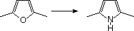
60 The reagent semicarbazide, NH2CONHNH2, reacts with simple aldehydes and ketones (R2C=O) forming crystalline derivatives called semicarbazones. Which of the following represents the structure of a semicarbazone?
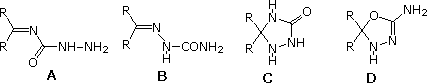
61 Which of the following compounds (I through V) should not be classified as an acetal?
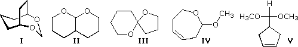